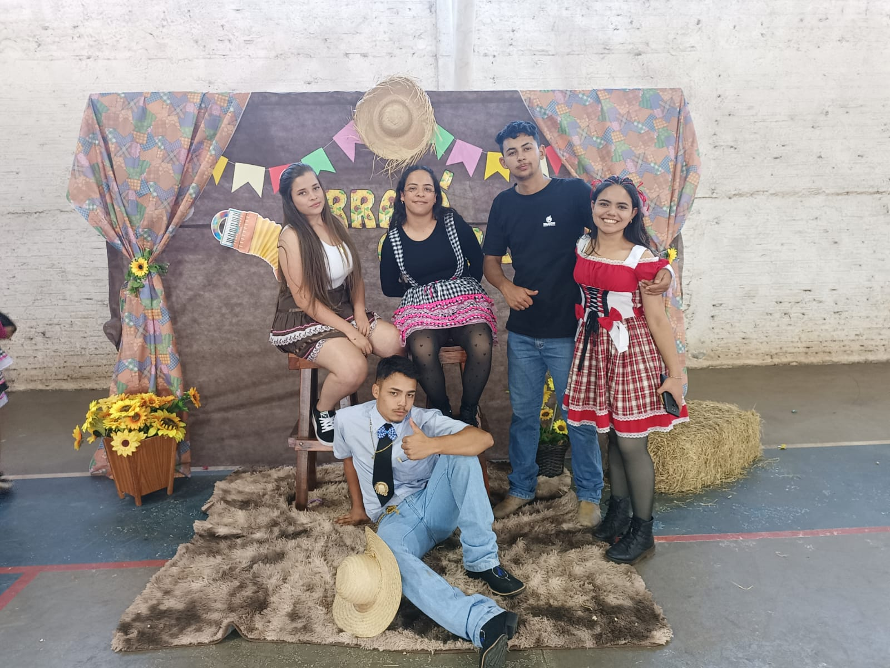
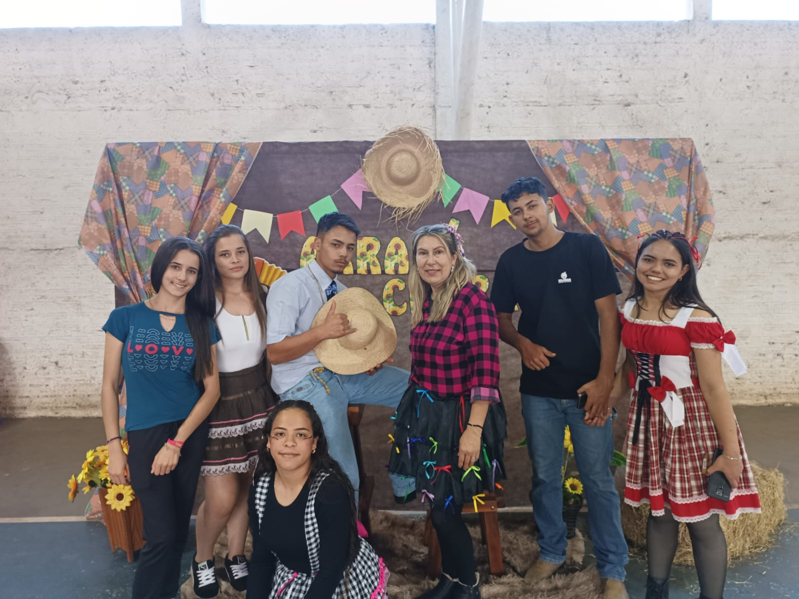
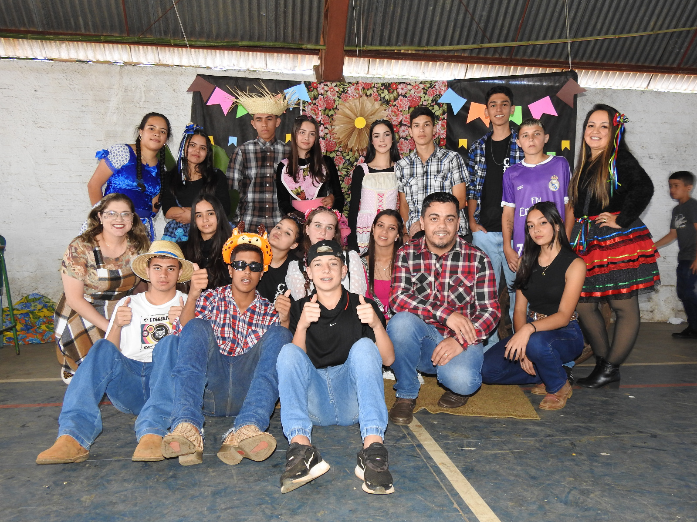
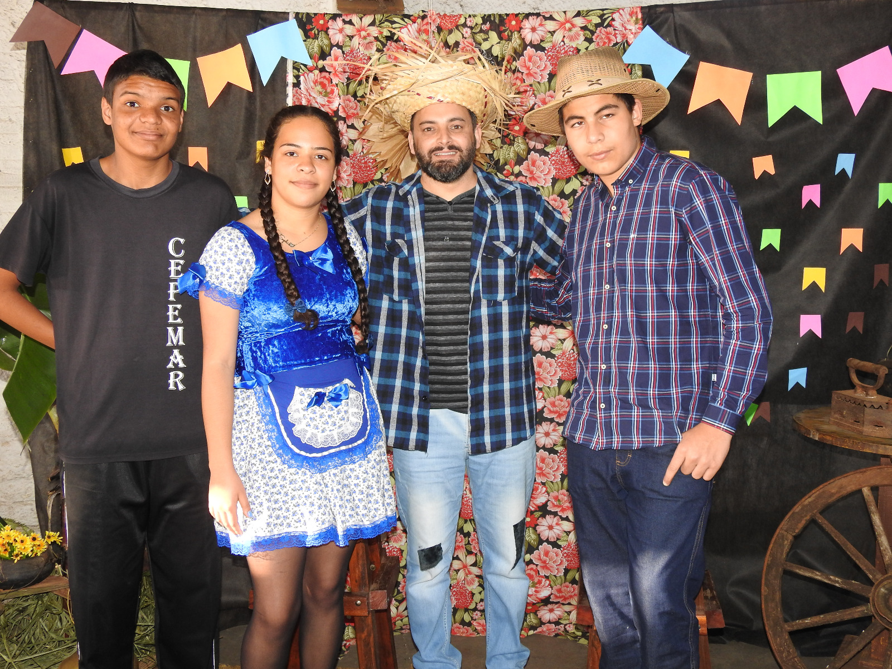

Festa junina, arraiá, São João, fogueira. Conhecida de diversas formas dependendo da região e lugar, é uma festa tradicional brasileira.
Antigamente uma festa realizada mais no meio rural, e hoje em dia se tornou uma grande marca em todo país.
Sua denominação e forma, dependem da região e de estado, como por exemplo no Paraná, é de costume ter quentão, uma bebida quente feita de vinho, devido
ao período que é realizada, geralmente no inverno. Já nos estados do norte do Brasil, os pratos típicos são o tacacá e o tucupi, pratos típicos da região.
Geralmente uma festa colorida, com bastante brincadeiras e comidas. uma festa tradicional e bem marcante, é difícil ouvir falar de festa junina e não pensar
em bandeirolas, fogueira e danças típicas.
Origem da Festa Junina no Brasil.
"Os historiadores apontam que as origens da Festa Junina estão diretamente relacionadas a festividades pagãs realizadas na Europa no solstício de verão,
momento em que ocorre a passagem da primavera para o verão. Essas festas eram realizadas como forma de afastar os maus espíritos e qualquer praga que pudesse
atingir a colheita. Para melhor entendermos isso, é preciso considerar que o solstício de verão no Hemisfério Norte acontece exatamente no mês de junho.
"O começo da Festa Junina no Brasil remonta ao século XVI. As Festas Juninas eram tradições bastante populares na Península Ibérica (Portugal e Espanha) e,
por isso, foram trazidas para cá pelos portugueses durante a colonização, assim como muitas outras tradições.
Quando introduzida no Brasil, a festa era conhecida como Festa Joanina, em referência a São João, mas, ao longo dos anos, teve o nome alterado para Festa
Junina, em referência ao mês no qual ocorre, junho.
Inicialmente, a festa possuía uma forte tom religioso – conotação essa que se perdeu em parte, uma vez que é vista por muitos mais como uma festividade popular
do que religiosa. Além disso, a evolução da Festa Junina no Brasil fez com que ela se associasse a símbolos típicos das zonas rurais.
O crescimento da festividade aconteceu sobretudo na região Nordeste, região que atualmente possui as maiores festas. A maior Festa Junina do país acontece
na cidade de Campina Grande, localizada no estado da Paraíba. Em 2017, a estimativa do evento era receber aproximadamente 2,5 milhões de pessoas.
A festa junina se adaptou aos dias de hoje, uma festa de origem no campo ou em termos informais "roça" com comidas, vestimentas e brincadeiras tradicionais.
Em uma festa junina, é comum vermos comidas derivadas de milho, amendoim, melado. Que são produzidos pelo campo, e industrializados pela cidade,como a
pipoca, paçoquinha de amendoim, e a tão conhecida pinga, que antigamente era praticamente toda artesanal e hoje em sua maioria é inustrializada.
E isso nos mostra como é necessária a união do campo e da cidade, até mesmo nas festas tradicionais.
A festa junina teve sua origem no campo para celebrar a colheita, e ao ser cristianizada também passou a ser celebrada em homenagem aos santos, como
São João, Santo Antônio e São Pedro.
Algumas comidas típicas.
Maça do amor.
Pipoca.
Doce de amendoim.
Algodão doce.
Pastel.
Arroz doce.
Algumas brincadeiras.
Pescaria
Boca do palhaço.
Correio elegante.
Argola.
Galeria de Imagens

Arraiá 2024 CECPEMAR alunos, Carlos Daniel, Carlos Ricardo, Greiziele, Izabele e Sophia.

Arraiá 2024 CECPEMAR alunos, Carlos Daniel, Carlos Ricardo, Greiziele, Izabele, Sophia, Rafaela e professora Valdete.

Arraiá CECPEMAR, alunos do grêmio estudantil 2023.

Arraiá 2023 CECPEMAR, professor Rosnei e alunos, kauan, Adonias e Sophia.